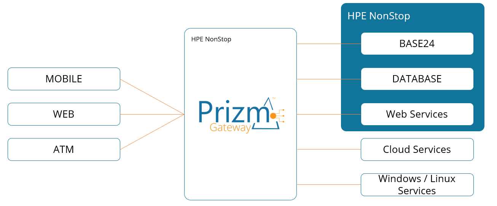
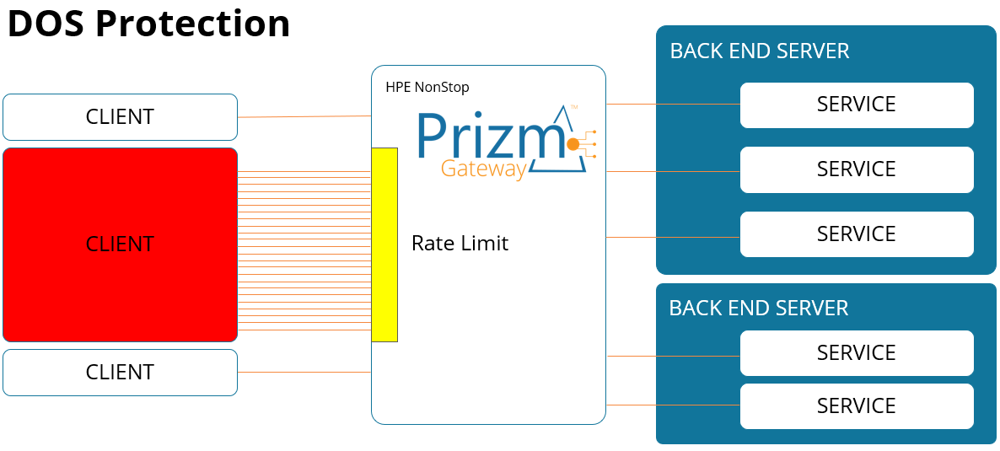
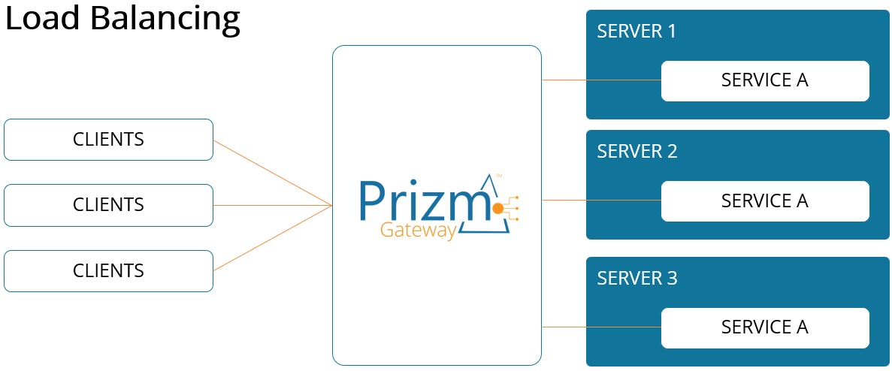
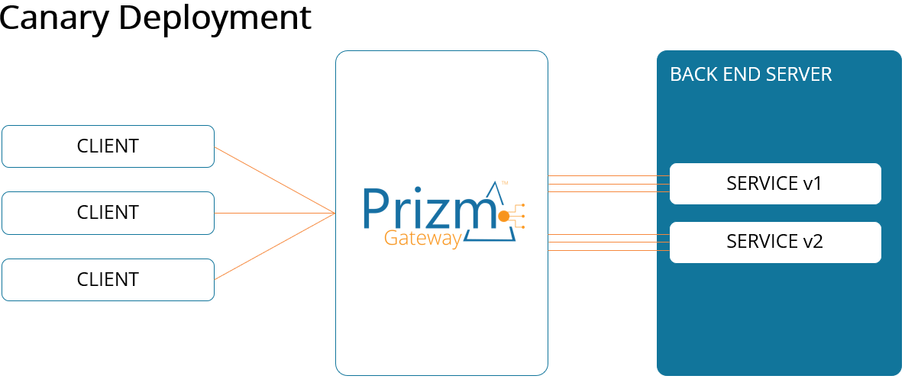

The Nonstop-based Gateway for All APIs
APIs have become critical components of enterprise infrastructure and application architecture. Prizm Gateway™ makes it easy for users to enable, maintain, monitor, and secure all API connections throughout the entire enterprise.
API's act as entry points for applications to access data from your backend services. With Prizm Gateway™, users can connect all of their RESTful APIs to enable real-time communication management for applications.
Prizm Gateway™ routes all API calls through a single point of entry while enabling traffic management, denial of service (DoS) protection, authorization, and access control, service deployment, load balancing, and monitoring.

Core Benefits
Prizm Gateway™ takes API calls from any client, determines which services are needed to fulfill requests, and routes the requests to the appropriate backend service to provide a unified, secure seamless experience for the API provider and consumer.
Single Point of Entry - Prizm Gateway™ provides a single point of entry for all APIs and provides added security and management simplicity for enterprise applications.
Web-based Graphical Interface - The Prizm Gateway™ Console is easy to use and provides comprehensive management of the entire set of features. This allows for a short learning curve resulting in less time and money spent getting users up-to-speed.
Nonstop Fundamentals
Guardian-based - No need to have OSS, or any additional software installed. Much simpler installation and management for Nonstop environments.
Fault-tolerant - Eliminates the risk of downtime with hardware that is dual redundant everything, and system and application software that is robust and self-healing. The goal of every Nonstop developer is "no single point of failure".
Key Features
Flexible authentication options to fit your needs
Distribute traffic across multiple services
Safely deploy new service versions
Comprehensive monitoring and troubleshooting
Control resource usage and prevent overload
Command-line interface for advanced management
Protect against denial of service attacks
Control request rates to protect services
Built on Nonstop reliability principles
Prevent processing of oversized requests
Control access by source IP
Easy-to-use graphical user interface

To provide protection against this threat we can configure to gateway to "rate limit" requests to a service. (transition)

The software automatically distributes incoming requests over multiple backend servers to distribute the request load.

Canary deployment, is a technique used to stage the release of a new version of a backend service.
Partner Blog: The Best of Nonstop Integration Is Just Getting Started
APIs have seen fast growth and adoption for many years now; as of 2020, it was estimated that there are over 24,000 APIs in use, just in the financial industry. While the number of APIs used is increasing, the more important statistic is the value these APIs bring to businesses.
📰 Read BlogReady to learn more about how Prizm Gateway can transform your API infrastructure? Contact Us for More Information